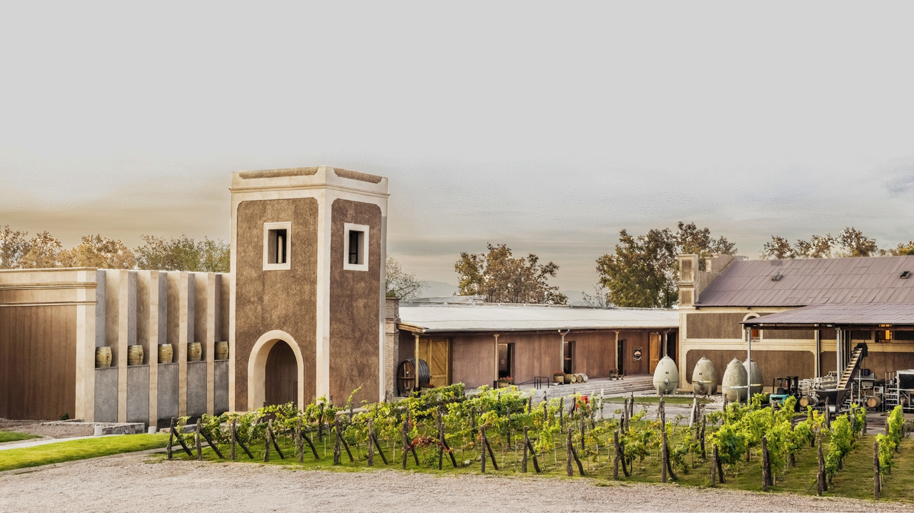
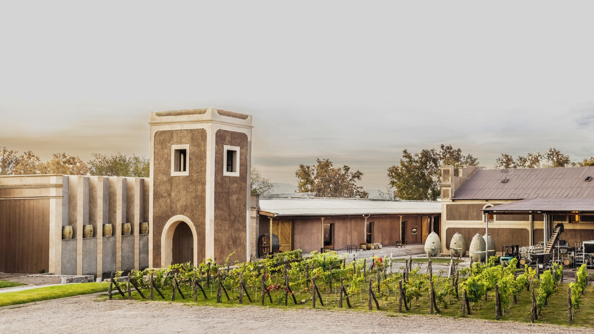

Between its warm walls and very high ceilings it feels like a deaf beat of time, the work, dedication and passion of those who celebrate life in wine.
The vineyards and their microcosm: sun, soil, temperature, water and the work of man. These combined elements provide wines with distinctive profiles, an expression of our terroir.
Our efforts are focused on the production of high-quality grapes, which are harvested manually from high-altitude valleys.
A tour of four wine portfolios that represent the diversity and expression of the Cuyo wine region.
La Casona seeks to be a place where both established and emerging artists can exhibit and offer their work.
Full traceability and quality in all processes. The only restaurant in the Cuyo region that offers matured meats.